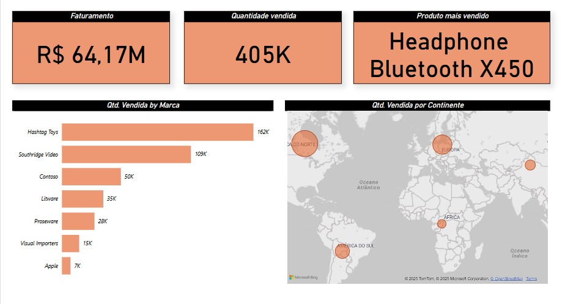

Projeto de vendas
Este projeto de dashboard de vendas foi desenvolvido com o objetivo de aprofundar meus conhecimentos em Power BI. Ele apresenta uma visão clara e interativa dos principais indicadores de desempenho em vendas, como faturamento total, quantidade vendida, produto mais vendido, além de análises por marca e por continente.
Repositório
Projeto Amazon
Este projeto de dashboard foi desenvolvido com o objetivo de aprofundar meus conhecimentos em Power BI. Ele apresenta uma visão clara e interativa dos principais indicadores de desempenho em vendas, como faturamento total, quantidade vendida, produto mais vendido, além de análises por marca e por continente.
Repositório